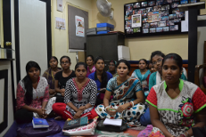

VAROSHA
Health-care Assistant Training

This project prepares and train individuals from disadvantaged community to deliver general healthcare support to newborns, the elderly, sick and those recovering from surgeries.
The training covers basic physiology, anatomy, hygiene, general skills like measuring blood pressure, temperature, dressing, administering medications, and physiotherapy. Candidates have a minimum of 8th grade education to be accepted into the program. They go through a 3 month education program and then are sent to a nursing home for 3 months of practical training. Once trained they are quickly finding work.
The training covers basic physiology, anatomy, hygiene, general skills like measuring blood pressure, temperature, dressing, administering medications, and physiotherapy. Candidates have a minimum of 8th grade education to be accepted into the program. They go through a 3 month education program and then are sent to a nursing home for 3 months of practical training. Once trained they are quickly finding work.